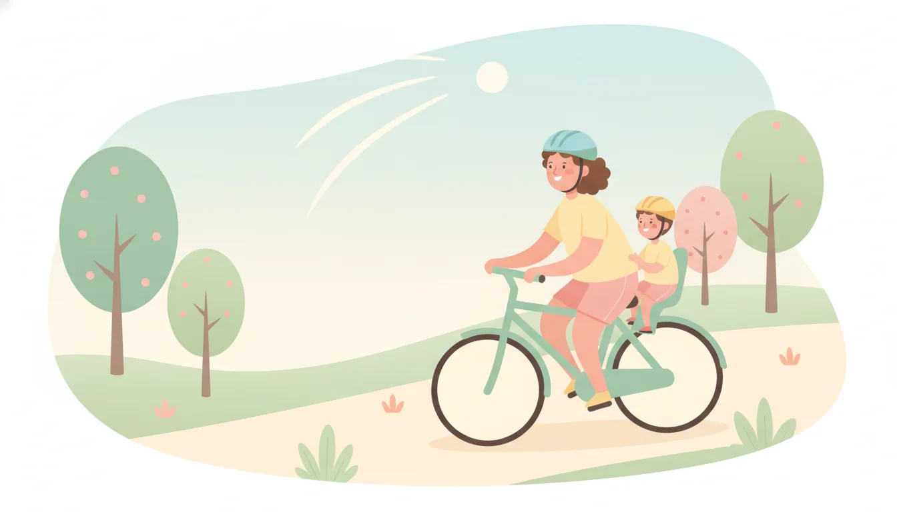

親子サイクリング入門!自転車と安全グッズの選び方
公開日: 2026-08-25
本ページのリンクには一部アフィリエイトリンクが含まれます(#PR)。
休日に子どもと自転車で出かける時間は、体を動かすだけでなく、いつもと違う景色を一緒に眺められる貴重な時間でもあります。ただ、いざ始めようとすると「どんな自転車を選べばいいのか」「安全対策は何が必要なのか」と迷う方も多いのではないでしょうか。この記事では、親子サイクリングを始める前に押さえておきたいポイントを、シーン別に整理して紹介します。
🚲 子どもの年齢別に見る自転車選びの基本
子どもと一緒に走るといっても、年齢によって適した乗り方は大きく変わります。未就学児であれば、まだ自転車を自分でこげないことも多いため、後ろに座席を取り付けるチャイルドシート型か、前後に子どもを乗せられるタイプの自転車が候補になります。小学校低学年になり自分で自転車をこげるようになったら、子ども用自転車を用意し、大人が並走するスタイルに切り替えるタイミングです。
選ぶ際は、子どもの足がしっかり地面につくサイズかどうかを必ず確認しましょう。大きめのサイズを買って長く使いたいという気持ちも分かりますが、体に合わないサイズはバランスを崩しやすく、転倒のリスクが上がります。数年で買い替える前提で、今の体格に合ったものを選ぶ方が安全面では安心です。
🛣️ シーン別に考える自転車のタイプ
親子サイクリングと一口に言っても、走る場所によって求められる装備は違います。
- 近所の公園や買い物程度なら、軽量で取り回しのよいシティサイクルタイプが扱いやすい
- 河川敷や自転車専用道を長時間走るなら、サスペンション付きや太めのタイヤを備えたクロスバイク寄りのモデルが疲れにくい
- 段差の多い住宅街を通るなら、ある程度のタイヤ幅と安定したブレーキ性能を優先する
用途を決めずに「なんとなく良さそうなもの」を選んでしまうと、実際に走ってみてから使いにくさに気づくことも少なくありません。休日にどんなコースを走りたいか、まず具体的にイメージしてから選ぶと失敗しにくくなります。
⛑️ 安全グッズの選び方、まず揃えたい基本装備
自転車本体と同じくらい重要なのが、安全グッズです。特にヘルメットは子ども・大人ともに必須と考えてよいでしょう。子ども用ヘルメットはサイズ調整機能付きのものを選ぶと、成長に合わせて長く使えます。頭囲を実際に測ってから購入すると、店頭やオンラインでもサイズ選びに迷いにくくなります。
そのほか、以下のようなグッズもあると安心です。
- 反射材付きのウェアやアームバンド(夕方の帰り道で視認性が上がる)
- グローブ(転倒時の手のケガを軽減しやすい)
- 子ども乗せ用座席のベルトやフットガード(挟み込み防止)
グッズはどれも「絶対に事故を防げる」ものではありませんが、リスクを減らす備えとして揃えておく価値はあります。
☀️ 季節別に気をつけたいポイント
春や秋は気候が安定していて、親子サイクリングを始めるにはちょうどよい季節です。一方で夏場は日差しと熱中症対策が欠かせません。子ども用の帽子型ヘルメットカバーや、こまめな水分補給を意識した休憩スケジュールを立てておくとよいでしょう。
冬場は日没が早いため、走行時間帯に注意が必要です。ライトは前後ともに明るさが十分なものを選び、電池切れを避けるため出発前に点灯確認をしておく習慣をつけておくと安心です。路面が凍結しやすい朝夕の時間帯を避けるのも、基本的ながら効果的な対策です。
🔰 初心者向け、走り始める前のチェックリスト
自転車と装備が揃ったら、走り出す前に簡単な点検を習慣にしておくと安心です。
- タイヤの空気圧は適正か
- ブレーキの効きに違和感はないか
- 子ども乗せ座席やベルトはしっかり固定されているか
- ヘルメットのあごひもは緩んでいないか
この4点は乗車前に毎回確認しておきたい基本項目です。慣れてくると省略したくなる場面もありますが、短時間で終わる作業なので習慣化してしまうのがおすすめです。
🗺️ ルート選びと休憩の取り方
初めのうちは、信号や交差点が少なく、平坦なコースを選ぶと親子ともに走りやすく感じます。距離は子どもの体力に合わせて短めに設定し、慣れてきたら少しずつ伸ばしていくくらいでちょうどよいペースです。
休憩は「疲れたら取る」のではなく、あらかじめ時間や場所を決めておくと、子どもが疲れを我慢して無理をする状況を防ぎやすくなります。トイレや水分補給ができるスポットを事前に調べておくと、当日の行動がスムーズです。
❓ よくある質問
Q. 子ども用自転車は何歳から乗せて大丈夫ですか?
製品によって対象年齢の目安が異なるため、購入前にメーカーが示す対象年齢や体格の目安を確認することが大切です。同じ年齢でも体格差があるので、年齢だけでなく身長や足つきも合わせて確認しましょう。
Q. ヘルメットのサイズはどう決めればいいですか?
頭の一番大きい部分(眉の少し上あたり)をメジャーで測り、その数値を基準にサイズを選びます。サイズ調整ダイヤル付きのモデルなら、多少の誤差も微調整で対応しやすくなります。
Q. 雨の日はどう対応すればいいですか?
路面が滑りやすくなるため、無理に走行せず予定を変更するのも一つの選択です。急に降られた場合に備えて、レインカバーや着替えを準備しておくと安心です。
スポーツ用品の今の在庫から
 PR
PR
 PR
PR
 PR
PR
本ページのリンクには一部アフィリエイトリンクが含まれます(#PR)。